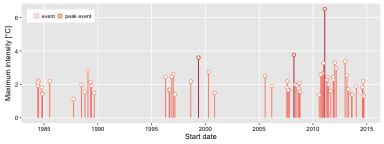

RmarineHeatWaves
R Translation of the Python Marine Heat Waves Scripts (see Hobday et al., 2016).
RmarineHeatWaves

The RmarineHeatWaves package is a translation of the original Python code written by Eric C. J. Oliver that can be found on GitHub.
The RmarineHeatWaves R package contains a number of functions which calculate and display marine heat waves according to the definition of Hobday et al. (2016). The marine cold spell option was implemented in version 0.13 (21 Nov 2015) of the Python module as a result of the preparation of Schlegel et al. (submitted), wherein the cold events are introduced and briefly discussed.
This package may be found on CRAN. Alternatively, you may install it from GitHub by issuing the following command:
devtools::install_github("ajsmit/RmarineHeatWaves")
The functions
| Function | Description |
|---|---|
detect() |
The main function which detects the events as per the definition of Hobday et al. (2016). |
make_whole() |
Constructs a continuous, uninterrupted time series of temperatures. |
block_average() |
Calculates annual means for event metrics. |
event_line() |
Creates a line plot of marine heat waves or cold spells. |
lolli_plot() |
Creates a timeline of selected event metrics. |
The package also provides data of observed SST records for three historical MHWs: the 2011 Western Australia event, the 2012 Northwest Atlantic event and the 2003 Mediterranean event.
For example, here is the detect() function applied to the Western Australian test data, which are also discussed by Hobday et al. (2016):
library(RmarineHeatWaves); library(dplyr)
ts <- make_whole(sst_WA)
res <- detect(ts, climatology_start = 1983, climatology_end = 2012)
res$event %>%
ungroup() %>%
dplyr::arrange(-int_cum)
#> Source: local data frame [60 x 23]
#>
#> index_start index_stop event_no duration date_start date_stop
#> <int> <int> <int> <dbl> <date> <date>
#> 1 6342 6436 22 95 1999-05-13 1999-08-15
#> 2 10629 10688 42 60 2011-02-06 2011-04-06
#> 3 10968 11014 49 47 2012-01-11 2012-02-26
#> 4 11018 11063 50 46 2012-03-01 2012-04-15
#> 5 10585 10624 41 40 2010-12-24 2011-02-01
#> 6 9582 9615 31 34 2008-03-26 2008-04-28
#> 7 5435 5472 18 38 1996-11-17 1996-12-24
#> 8 6686 6714 23 29 2000-04-21 2000-05-19
#> 9 10926 10954 48 29 2011-11-30 2011-12-28
#> 10 10530 10553 39 24 2010-10-30 2010-11-22
#> .. ... ... ... ... ... ...
#> Variables not shown: date_peak <date>, int_mean <dbl>, int_max <dbl>,
#> int_var <dbl>, int_cum <dbl>, int_mean_rel_thresh <dbl>,
#> int_max_rel_thresh <dbl>, int_var_rel_thresh <dbl>, int_cum_rel_thresh
#> <dbl>, int_mean_abs <dbl>, int_max_abs <dbl>, int_var_abs <dbl>,
#> int_cum_abs <dbl>, int_mean_norm <dbl>, int_max_norm <dbl>, rate_onset
#> <dbl>, rate_decline <dbl>.The corresponding event_line() and lolli_plot() look like this:
event_line(res, spread = 200, metric = "int_cum",
start_date = "2010-10-01", end_date = "2011-08-30")
lolli_plot(res)
References
Hobday, A.J. et al. (2016). A hierarchical approach to defining marine heatwaves, Progress in Oceanography, 141, pp. 227-238. DOI:10.1016/j.pocean.2015.12.014. PDF.
Schlegel, R. W., Oliver, E. C. J., Wernberg, T. W., Smit, A. J. (submitted). Coastal and offshore co-occurrences of marine heatwaves and cold-spells. Progress in Oceanography.
Acknowledgements
The Python code was written by Eric C. J. Oliver.
Contributors to the Marine Heatwaves definition and its numerical implementation include Alistair J. Hobday, Lisa V. Alexander, Sarah E. Perkins, Dan A. Smale, Sandra C. Straub, Jessica Benthuysen, Michael T. Burrows, Markus G. Donat, Ming Feng, Neil J. Holbrook, Pippa J. Moore, Hillary A. Scannell, Alex Sen Gupta, and Thomas Wernberg.
The translation from Python to R was done by A. J. Smit and the graphing functions were contributed to by Robert. W. Schlegel.
Contact
A. J. Smit Department for Biodiversity & Conservation Biology, University of the Western Cape, Private Bag X17, Bellville 7535, South Africa, E-mail: ajsmit@uwc.ac.za, Work tel.: +27 (0)21 959 3783